本文章將介紹一些 GCP 建立 VM 的一些細碎項目
創建 VM 的管理介紹
創建 VM 時點擊下面的管理有很多設定，本章將介紹比較常用設定，大部分設定基本一看就懂
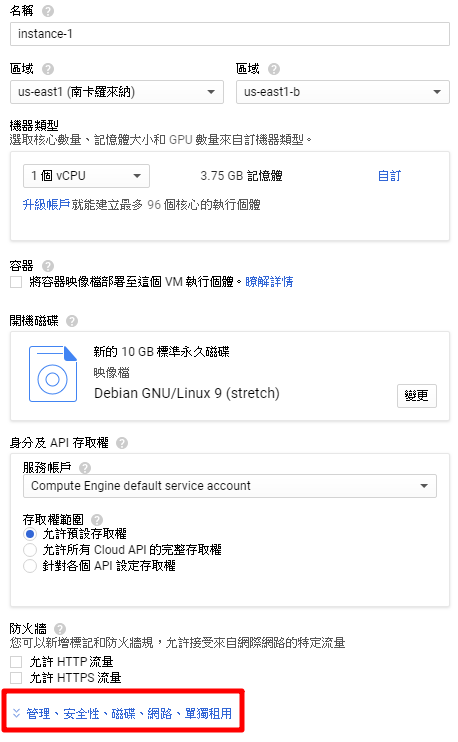
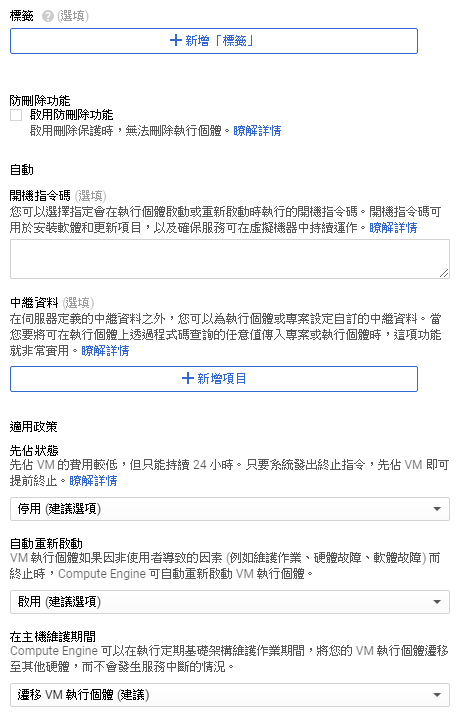
1. 防刪除功能：作為工作的一部分，可能存在某些對運行應用程序或服務至關重要的 VM，例如運行 SQL Server，用作許可證管理器的服務器等。這些 VM 可能需要無限期地保持運行，因此您需要一種方法來保護這些 VM 不被刪除
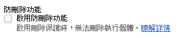
2. 開機指令碼：在虛擬機上創建並運行自己的啟動腳本，以便在每次啟動時執行自動化任務，啟動腳本可以執行許多操作，例如安裝軟件、執行更新，啟用服務以及腳本中定義的任何其他任務
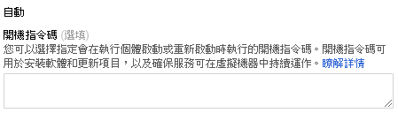
例如，安裝 Docker 腳本
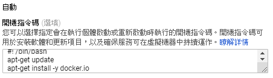
3. 先佔狀態：Google 會把需要維護等一些狀況導致需要在 24 小時內關機的 VM ( 隨時都有可能關閉不一定是 24 小時 ) 變成先佔模式，先佔模式的 VM 也會比較便宜適用於無服務 VM
無先佔模式費用
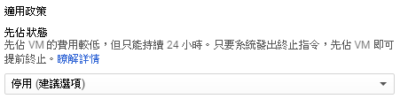
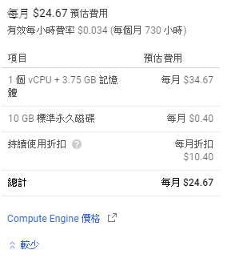
開啟先佔模式費用
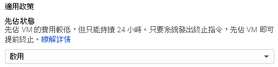
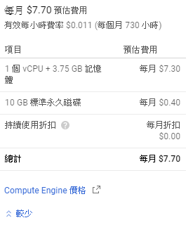
4. 自動重新啟動：VM 執行個體如果因非使用者導致的因素 (例如維護作業、硬體故障、軟體故障) 而終止時，Compute Engine 可自動重新啟動 VM 執行個體，但先佔模式無法開啟。
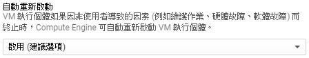
5. 在主機維護期間遷移 VM：Compute Engine 可以在執行定期基礎架構維護作業期間，將您的 VM 執行個體遷移至其他硬體，而不會發生服務中斷的情況。
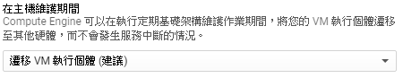